まず押さえること
看護師が守る境界
- 指示・プロトコルとの照合
- モード
- 設定値
- アラーム範囲
- 患者に合わせた設定変更は、権限と教育を受けた者が行う
- 機種の取扱説明書で確認する項目
- 名称
- 操作
- 回路構成
人工呼吸器が支えるもの
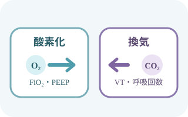
酸素化と換気は別の視点
酸素化に関わる要因の例
- FiO2
- PEEP
- 肺の病態
換気に関わる要因の例
- 一回換気量
- 呼吸回数
- 死腔
- 換気はPaCO2に反映される。
- 人工呼吸器は病気そのものを治す機械ではなく、原因治療が効くまで呼吸を支える。
- 高い圧や過大な換気量、過剰な酸素にも害がある。
患者までの経路

- 気管チューブは気管内に入り、人工呼吸器の回路と接続される。
- カフはチューブの周囲にある。
- カフ圧や固定は別途評価する。
- 図は挿入深さ・適正位置を指定しない。
- 位置確認は指示・院内手順に従う。
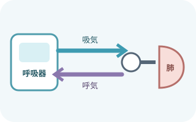
吸気と呼気の道を追う
- 人工呼吸器から吸気側回路へ送気する。
- 加湿などの構成部品を経由し、Yピースへ進む。
- 気管チューブを通って患者へ届く。
- 部品の種類と位置は、下記の取扱説明書で確認する。
確認する取扱説明書
- 採用回路
- 採用機器
呼気は呼気側回路を通って呼気弁へ戻る。
- 供給と接続
- 電源
- 酸素
- 圧縮空気
- 回路接続
- 加温加湿器または人工鼻の種類と位置
- 回路の確認
- ウォータートラップ
- 結露
- 回路の屈曲
- 回路の圧迫
- 付属品の位置
- 閉鎖式吸引
- フィルタ
- ネブライザ
- バッグバルブ装置と酸素源をすぐ使える状態にする
設定値を読む
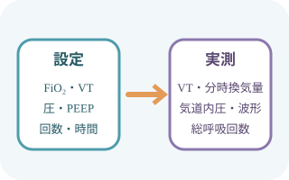
設定と実測を対にする
設定した値が、そのまま患者へ届くとは限らない。
実測値と波形を変える要因
- リーク
- 肺の硬さ
- 気道抵抗
- 自発呼吸
- FiO2：吸入酸素濃度。目標酸素化に必要な最小限へ
- VT：一回換気量。予測体重あたりで評価する
- 呼吸回数：設定回数と患者の総呼吸回数を区別する
- 吸気圧：圧規定換気で吸気を支える圧
- PEEP：呼気終末に残す陽圧。肺胞虚脱を防ぐ一方、循環にも影響する
- PS：自発吸気を補助する圧
- 患者との同調に関わる設定
- 吸気時間
- 流量
- トリガ
- 肺保護換気で合わせて評価
- VT
- プラトー圧
- PEEP
- auto-PEEP
- 駆動圧
- 目標は病態で異なるため、一律の数字に当てはめない。
観察項目
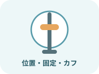
気道の観察
- チューブ深さ
- 固定
- カフ圧
- 口腔
- 皮膚
- 屈曲
- 分泌物
- 咳
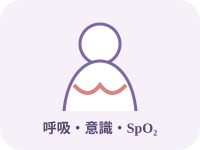
患者の観察
- 意識
- 呼吸数
- 呼吸努力
- 胸郭左右差
- 呼吸音
- SpO2
- 血液ガス
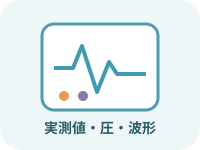
機器の観察
- モード
- 設定VT
- 実測VT
- 分時換気量
- 圧
- 総呼吸回数
- 波形
- 同調
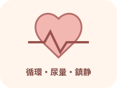
全身の観察
- 血圧
- 脈拍
- 末梢循環
- 尿量
- 鎮痛鎮静
- せん妄
- 腹部
- 栄養
- 皮膚
陽圧換気と循環
- 胸腔内圧上昇で静脈還流と心拍出量が低下し、血圧が下がることがある
- 一方、測定される中心静脈圧は陽圧やPEEPの影響で高く見えることがある
- 合わせて見る循環指標
- 血圧
- 脈拍
- 末梢循環
- 尿量
数値一つで循環血液量を決めない。
- CO2ナルコーシスは高CO2血症による意識障害。
- 高CO2血症で評価
- 換気
- 血液ガス
- 意識
単純に「酸素の副作用」とは判断しない。
患者と人工呼吸器の同調
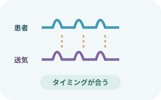
患者の呼吸と波形を重ねる
- 努力しているのに送気されない。
- 二回続けて送気される。
- 吸気の途中で終わる。
- 呼気中も押される。
- 苦痛
- 分泌物
- 回路
- 鎮痛鎮静
- 設定
アラーム対応
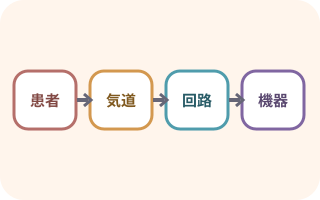
患者 → 気道 → 回路 → 機器
患者の換気と酸素化を確認しながら、原因を上流からたどる。
- 原因が分からず換気不良なら、応援を呼ぶ。
- 訓練された方法で人工呼吸器を外して酸素付きバッグ換気へ移る。
気道内圧上限
- 閉塞や抵抗の確認
- 痰
- 咬み込み
- チューブの屈曲
- 回路の屈曲
- 患者側の要因
- 咳
- ファイティング
- 気管支攣縮
- 肺の病態
- 肺コンプライアンス低下
- 無気肺
- 肺水腫
- 気胸
気道内圧下限・低VT・低分時換気量
- 回路のリーク要因
- 回路外れ
- 接続の緩み
- 破損
- 人工気道の確認
- カフリーク
- チューブ位置異常
- 換気不足の要因
- 呼吸努力低下
- 設定と患者需要の不一致
そのほか
- 呼吸に関するアラーム
- 無呼吸
- 高呼吸回数
- 高分時換気量
- 供給と機器に関するアラーム
- FiO2
- 酸素供給
- 電源
- バッテリー
- 機器異常
- アラーム設定は患者ごとに適正化し、鳴らなくするために広げない
急に換気できないとき
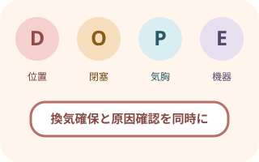
DOPEで原因を並べる
Displacement：チューブ位置異常
O：閉塞の原因
- 痰
- 咬み込み
- 屈曲
Pneumothorax：気胸
E：装置側の要因
- 回路
- 機器
- 供給源
- 応援要請とABCDE応援要請時の確認
- 意識
- 気道
- 呼吸
- 脈拍
- 血圧
- SpO2
- 胸郭運動と呼吸音胸郭と気道の確認
- 左右差
- 送気
- チューブ深さ
- 固定
- 閉塞
- 回路をたどる回路をたどる確認
- 外れ
- 屈曲
- 水
- フィルタ閉塞
- 酸素
- 電源
- 換気を確保
- 換気不能・重い低酸素なら、訓練と院内手順に従い酸素付きバッグ換気へ切り替える。
- 原因治療につなぐ。
日常ケアとVAP予防
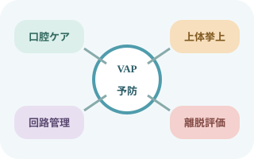
口・体位・回路・離脱を束ねる
組み合わせる日常ケア
- 手指衛生
- 口腔ケア
- 誤嚥予防
- 回路管理
- 鎮静を最小限にする工夫
- 早期離床
- 毎日の離脱評価
個々の適応を確認し、組み合わせて実施する。
- 禁忌がなければ上体挙上を行い、角度と患者のずれを確認
- 歯磨きを含む口腔ケアを行う。
- クロルヘキシジンのルーチン使用は避ける。
- 体位変換前などに口腔・カフ上部の分泌物を確認する
- 結露は患者側へ流さず、手袋と手指衛生を守って排出する
- 回路は日数だけで定期交換せず、汚染・故障または製造元の指示で交換する
- 圧迫を観察する部位
- チューブ固定部
- 口唇
- 舌
- 耳
- 後頭部
- 痛みを評価して鎮痛を優先する。
- 過鎮静を避ける。
支援する項目- せん妄
- 睡眠
- 運動
吸引・加湿・吸入
吸引
- 吸引の必要性を判断する情報
- 呼吸音
- 波形
- 分泌物
- SpO2
- 回路開放に伴う危険
- 低酸素
- 肺胞虚脱
- 感染
- 生理食塩水の気管内注入をルーチンに行わない
加湿
- 加湿の確認
- 加温加湿器または人工鼻の種類
- 温度
- 水位
- 結露
- 加湿不足による危険
- 痰の粘稠化
- チューブ閉塞
- 過剰な結露は誤流入につながる。
人工呼吸器装着中の吸入
- 吸入前の照合
- 処方
- 薬剤
- 用量
- 吸入デバイスと回路・人工呼吸器の適合
- 機種と院内手順に従う項目
- ネブライザの位置
- 加湿器の扱い
- 人工鼻の扱い
- フィルタの扱い
- 吸入操作前後の再確認
- 呼吸状態
- 波形
- 設定
- 接続
回路を不用意に開放しない。
- 機種で異なる構成・操作
- 回路の色
- ふたの位置
- 画面メニュー
- 見た目で判断せず、採用機器の手順を照合する。
ウィーニングと離脱
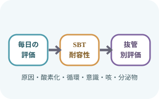
毎日、外せる可能性を評価
離脱の可能性を評価
- 原因病態の改善
- 自発呼吸
- 酸素化
- 循環
- 意識
- 咳
- 分泌物
- 適応があれば標準化した自発呼吸トライアル（SBT）を行う。
- SBT中の耐容性を評価する項目
- 呼吸
- 循環
- 意識
抜管は別の判断
- SBT耐容後も必要な抜管前評価
- 気道保護
- 咳
- 分泌物
- 上気道閉塞リスク
- 抜管後の計画をチームで決める
- 抜管後の酸素療法
- HFNCの適応
- NPPVの適応
- 再挿管への備え
- 人工呼吸器をスタンバイにする時機や人員は院内手順と機種に従う
合併症
- 人工呼吸器関連肺傷害
- 過伸展
- 圧損傷
- 虚脱と再開放の反復
- 高濃度酸素による合併症
- 酸素毒性
- 吸収性無気肺
- 陽圧による循環への影響
- 血圧低下
- 心拍出量低下
- 肺炎・分泌物・閉塞
- 人工呼吸器関連肺炎
- 分泌物貯留
- 気管チューブ閉塞
- 呼吸筋と筋力の障害
- 人工呼吸器誘発性横隔膜機能障害
- 筋力低下
- 意識・活動・睡眠
- せん妄
- 過鎮静
- 不動
- 睡眠障害
- 損傷・腹部・栄養
- 口腔損傷
- 気道損傷
- 皮膚損傷
- 腹部膨満
- 便秘
- 栄養障害
記録
- 患者状態の記録
- 日時
- 体位
- 意識
- 呼吸
- 循環
- SpO2
- 必要時の血液ガス
- 設定の記録
- モード
- 設定FiO2
- 設定VT
- 設定回数
- 設定圧
- PEEP
- PS
- 実測と反応の記録
- 実測VT
- 分時換気量
- 総呼吸回数
- 気道内圧
- 波形
- 同調
- 気道と回路の記録
- チューブ深さ
- 固定
- カフ圧
- 痰の量
- 痰の性状
- 加湿
- 回路
- アラーム対応の記録
- アラーム内容
- 原因
- 対応
- 対応前後の患者反応
- ケアと離脱評価の記録
- 鎮痛鎮静
- せん妄
- 口腔ケア
- 体位変換
- 離床
- SBT
- 離脱評価
- 記録時刻と書式は勤務帯で一律にせず、院内基準と患者の変化に合わせる。
- 設定値だけでなく、実測値と患者反応を同じ時点で残す。
出典
- NHLBI：人工呼吸器と気管チューブ
- NHLBI：気管・気管支・肺の位置関係
- 日本呼吸器学会・日本呼吸療法医学会・日本集中治療医学会「ARDS診療ガイドライン2021」
- AARC Clinical Practice Guideline: Patient-Ventilator Assessment（2024）
- AARC Clinical Practice Guideline: Spontaneous Breathing Trials for Liberation From Adult Mechanical Ventilation（2024）
- SHEA/IDSA/APIC「VAP・VAE・院内肺炎予防戦略 2022 Update」
- CDC「Guidelines for Preventing Health-Care-Associated Pneumonia」
- AARC「Safe Initiation and Management of Mechanical Ventilation」